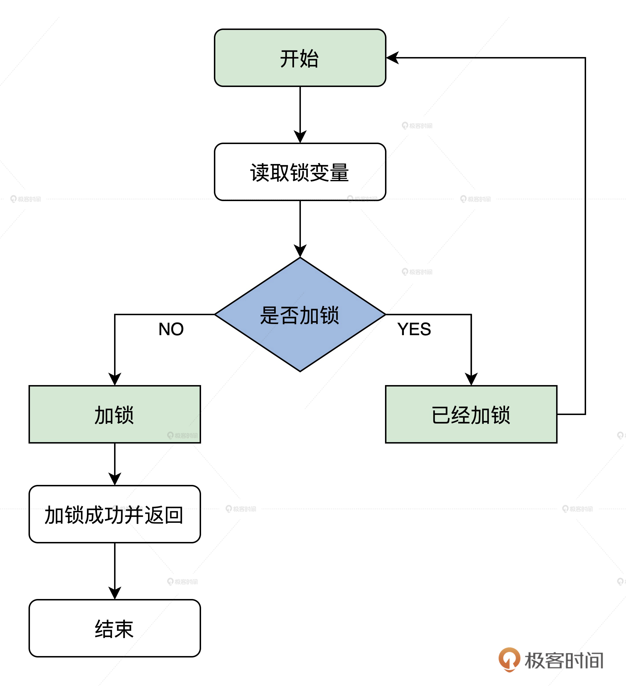
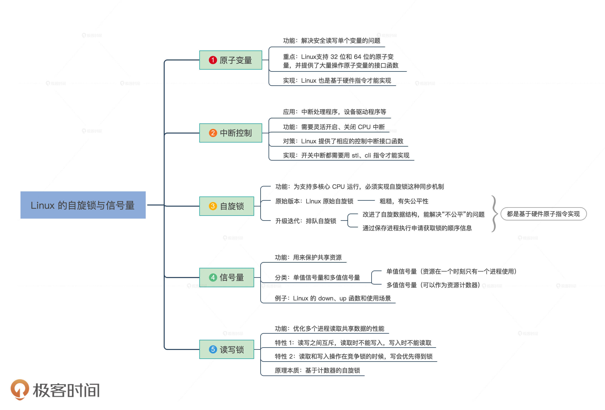

- 00 开篇词 为什么要学写一个操作系统？.md.html
- 00 编辑手记 升级认知，迭代自己的操作系统.md.html
- 01 程序的运行过程：从代码到机器运行.md.html
- 02 几行汇编几行C：实现一个最简单的内核.md.html
- 03 黑盒之中有什么：内核结构与设计.md.html
- 04 震撼的Linux全景图：业界成熟的内核架构长什么样？.md.html
- 05 CPU工作模式：执行程序的三种模式.md.html
- 06 虚幻与真实：程序中的地址如何转换？.md.html
- 07 Cache与内存：程序放在哪儿？.md.html
- 08 锁：并发操作中，解决数据同步的四种方法.md.html
- 09 瞧一瞧Linux：Linux的自旋锁和信号量如何实现？.md.html
- 10 设置工作模式与环境（上）：建立计算机.md.html
- 11 设置工作模式与环境（中）：建造二级引导器.md.html
- 12 设置工作模式与环境（下）：探查和收集信息.md.html
- 13 第一个C函数：如何实现板级初始化？.md.html
- 14 Linux初始化（上）：GRUB与vmlinuz的结构.md.html
- 15 Linux初始化（下）：从_start到第一个进程.md.html
- 16 划分土地（上）：如何划分与组织内存？.md.html
- 17 划分土地（中）：如何实现内存页面初始化？.md.html
- 18 划分土地（下）：如何实现内存页的分配与释放？.md.html
- 19 土地不能浪费：如何管理内存对象？.md.html
- 20 土地需求扩大与保障：如何表示虚拟内存？.md.html
- 21 土地需求扩大与保障：如何分配和释放虚拟内存？.md.html
- 22 瞧一瞧Linux：伙伴系统如何分配内存？.md.html
- 23 瞧一瞧Linux：SLAB如何分配内存？.md.html
- 24 活动的描述：到底什么是进程？.md.html
- 25 多个活动要安排（上）：多进程如何调度？.md.html
- 26 多个活动要安排（下）：如何实现进程的等待与唤醒机制？.md.html
- 27 瞧一瞧Linux：Linux如何实现进程与进程调度_.md.html
- 28 部门分类：如何表示设备类型与设备驱动？.md.html
- 29 部门建立：如何在内核中注册设备？.md.html
- 30 部门响应：设备如何处理内核I_O包？.md.html
- 31 瞧一瞧Linux：如何获取所有设备信息？.md.html
- 32 仓库结构：如何组织文件_.md.html
- 33 仓库划分：文件系统的格式化操作.md.html
- 34 仓库管理：如何实现文件的六大基本操作？.md.html
- 35 瞧一瞧Linux：虚拟文件系统如何管理文件？.md.html
- 36 从URL到网卡：如何全局观察网络数据流动？.md.html
- 37 从内核到应用：网络数据在内核中如何流转.md.html
- 38 从单排到团战：详解操作系统的宏观网络架构.md.html
- 39 瞧一瞧Linux：详解socket实现与网络编程接口.md.html
- 40 瞧一瞧Linux：详解socket的接口实现.md.html
- 41 服务接口：如何搭建沟通桥梁？.md.html
- 42 瞧一瞧Linux：如何实现系统API？.md.html
- 43 虚拟机内核：KVM是什么？.md.html
- 44 容器：如何理解容器的实现机制？.md.html
- 45 ARM新宠：苹果的M1芯片因何而快？.md.html
- 46 AArch64体系：ARM最新编程架构模型剖析.md.html
- LMOS来信：第二季课程带你“手撕”计算机基础.md.html
- 大咖助场 以无法为有法，以无限为有限.md.html
- 用户故事 yiyang：我的上机实验“爬坑指南”.md.html
- 用户故事 成为面向“知识库”的工程师.md.html
- 用户故事 技术人如何做选择，路才越走越宽？.md.html
- 用户故事 操作系统发烧友：看不懂？因为你没动手.md.html
- 用户故事 用好动态调试，助力课程学习.md.html
- 用户故事 艾同学：路虽远，行则将至.md.html
- 结束语 生活可以一地鸡毛，但操作系统却是心中的光.md.html
- 捐赠
09 瞧一瞧Linux：Linux的自旋锁和信号量如何实现？
你好，我是LMOS。
上节课，我们学习了解决数据同步问题的思路与方法。Linux作为成熟的操作系统内核，当然也有很多数据同步的机制，它也有原子变量、开启和关闭中断、自旋锁、信号量。
那今天我们就来探讨一下这些机制在Linux中的实现。看看Linux的实现和前面我们自己的实现有什么区别，以及Linux为什么要这么实现，这么实现背后的机理是什么。
Linux的原子变量
首先，我们一起来看看Linux下的原子变量的实现，在Linux中，有许多共享的资源可能只是一个简单的整型数值。
例如在文件描述符中，需要包含一个简单的计数器。这个计数器表示有多少个应用程序打开了文件。在文件系统的open函数中，将这个计数器变量加1；在close函数中，将这个计数器变量减1。
如果单个进程执行打开和关闭操作，那么这个计数器变量不会出现问题，但是Linux是支持多进程的系统，如果有多个进程同时打开或者关闭文件，那么就可能导致这个计数器变量多加或者少加，出现错误。
为了避免这个问题，Linux提供了一个原子类型变量atomic_t。该变量的定义如下。
typedef struct {
int counter;
} atomic_t;//常用的32位的原子变量类型
#ifdef CONFIG_64BIT
typedef struct {
s64 counter;
} atomic64_t;//64位的原子变量类型
#endif
上述代码自然不能用普通的代码去读写加减，而是要用Linux专门提供的接口函数去操作，否则就不能保证原子性了，代码如下。
//原子读取变量中的值
static __always_inline int arch_atomic_read(const atomic_t *v)
{
return __READ_ONCE((v)->counter);
}
//原子写入一个具体的值
static __always_inline void arch_atomic_set(atomic_t *v, int i)
{
__WRITE_ONCE(v->counter, i);
}
//原子加上一个具体的值
static __always_inline void arch_atomic_add(int i, atomic_t *v)
{
asm volatile(LOCK_PREFIX "addl %1,%0"
: "+m" (v->counter)
: "ir" (i) : "memory");
}
//原子减去一个具体的值
static __always_inline void arch_atomic_sub(int i, atomic_t *v)
{
asm volatile(LOCK_PREFIX "subl %1,%0"
: "+m" (v->counter)
: "ir" (i) : "memory");
}
//原子加1
static __always_inline void arch_atomic_inc(atomic_t *v)
{
asm volatile(LOCK_PREFIX "incl %0"
: "+m" (v->counter) :: "memory");
}
//原子减1
static __always_inline void arch_atomic_dec(atomic_t *v)
{
asm volatile(LOCK_PREFIX "decl %0"
: "+m" (v->counter) :: "memory");
}
Linux原子类型变量的操作函数有很多，这里我只是介绍了最基础的几个函数，其它的原子类型变量操作也依赖于上述几个基础的函数。
你会发现，Linux的实现也同样采用了x86 CPU的原子指令，LOCK_PREFIX是一个宏，根据需要展开成“lock;”或者空串。单核心CPU是不需要lock前缀的，只要在多核心CPU下才需要加上lock前缀。
剩下__READ_ONCE，__WRITE_ONCE两个宏，我们来看看它们分别做了什么，如下所示。
#define __READ_ONCE(x) \
(*(const volatile __unqual_scalar_typeof(x) *)&(x))
#define __WRITE_ONCE(x, val) \
do {*(volatile typeof(x) *)&(x) = (val);} while (0)
//__unqual_scalar_typeof表示声明一个非限定的标量类型，非标量类型保持不变。说人话就是返回x变量的类型，这是GCC的功能，typeof只是纯粹返回x的类型。
//如果 x 是int类型则返回“int”
#define __READ_ONCE(x) \
(*(const volatile int *)&(x))
#define __WRITE_ONCE(x, val) \
do {*(volatile int *)&(x) = (val);} while (0)
结合刚才的代码，我给你做个解读。Linux定义了__READ_ONCE，__WRITE_ONCE这两个宏，是对代码封装并利用GCC的特性对代码进行检查，把让错误显现在编译阶段。其中的“volatile int *”是为了提醒编译器：这是对内存地址读写，不要有优化动作，每次都必须强制写入内存或从内存读取。
Linux控制中断
Linux中有很多场景，需要在关中断下才可以安全执行一些操作。
比如，多个中断处理程序需要访问一些共享数据，一个中断程序在访问数据时必须保证自身（中断嵌套）和其它中断处理程序互斥，否则就会出错。再比如，设备驱动程序在设置设备寄存器时，也必须让CPU停止响应中断。
Linux控制CPU响应中断的函数如下。
//实际保存eflags寄存器
extern __always_inline unsigned long native_save_fl(void){
unsigned long flags;
asm volatile("# __raw_save_flags\n\t"
"pushf ; pop %0":"=rm"(flags)::"memory");
return flags;
}
//实际恢复eflags寄存器
extern inline void native_restore_fl(unsigned long flags){
asm volatile("push %0 ; popf"::"g"(flags):"memory","cc");
}
//实际关中断
static __always_inline void native_irq_disable(void){
asm volatile("cli":::"memory");
}
//实际开启中断
static __always_inline void native_irq_enable(void){
asm volatile("sti":::"memory");
}
//arch层关中断
static __always_inline void arch_local_irq_disable(void){
native_irq_disable();
}
//arch层开启中断
static __always_inline void arch_local_irq_enable(void){
native_irq_enable();
}
//arch层保存eflags寄存器
static __always_inline unsigned long arch_local_save_flags(void){
return native_save_fl();
}
//arch层恢复eflags寄存器
static __always_inline void arch_local_irq_restore(unsigned long flags){
native_restore_fl(flags);
}
//实际保存eflags寄存器并关中断
static __always_inline unsigned long arch_local_irq_save(void){
unsigned long flags = arch_local_save_flags();
arch_local_irq_disable();
return flags;
}
//raw层关闭开启中断宏
#define raw_local_irq_disable() arch_local_irq_disable()
#define raw_local_irq_enable() arch_local_irq_enable()
//raw层保存恢复eflags寄存器宏
#define raw_local_irq_save(flags) \
do { \
typecheck(unsigned long, flags); \
flags = arch_local_irq_save(); \
} while (0)
#define raw_local_irq_restore(flags) \
do { \
typecheck(unsigned long, flags); \
arch_local_irq_restore(flags); \
} while (0)
#define raw_local_save_flags(flags) \
do { \
typecheck(unsigned long, flags); \
flags = arch_local_save_flags(); \
} while (0)
//通用层接口宏
#define local_irq_enable() \
do { \
raw_local_irq_enable(); \
} while (0)
#define local_irq_disable() \
do { \
raw_local_irq_disable(); \
} while (0)
#define local_irq_save(flags) \
do { \
raw_local_irq_save(flags); \
} while (0)
#define local_irq_restore(flags) \
do { \
raw_local_irq_restore(flags); \
} while (0)
可以发现，Linux中通过定义的方式对一些底层函数进行了一些包装，为了让你抓住重点，前面这些宏我去掉了和中断控制无关的额外操作，详细信息你可以参阅相关代码。
编译Linux代码时，编译器自动对宏进行展开。其中，do{}while(0)是Linux代码中一种常用的技巧，do{}while(0)表达式会保证{}中的代码片段执行一次，保证宏展开时这个代码片段是一个整体。
带native_前缀之类的函数则跟我们之前实现的hal_前缀对应，而Linux为了支持不同的硬件平台，做了多层封装。
Linux自旋锁
Linux也是支持多核心CPU的操作系统内核，因此Linux也需要自旋锁来对系统中的共享资源进行保护。同一时刻，只有获取了锁的进程才能使用共享资源。
根据上节课对自旋锁算法的理解，自旋锁不会引起加锁进程睡眠，如果自旋锁已经被别的进程持有，加锁进程就需要一直循环在那里，查看是否该自旋锁的持有者已经释放了锁，”自旋”一词就是因此而得名。
Linux有多种自旋锁，我们这里只介绍两种，原始自旋锁和排队自旋锁，它们底层原理和我们之前实现的没什么不同，但多了一些优化和改进，下面我们一起去看看。
Linux原始自旋锁
我们先看看Linux原始的自旋锁，Linux的原始自旋锁本质上用一个整数来表示，值为1代表锁未被占用，为0或者负数则表示被占用。
你可以结合上节课的这张图，理解后面的内容。当某个CPU核心执行进程请求加锁时，如果锁是未加锁状态，则加锁，然后操作共享资源，最后释放锁；如果锁已被加锁，则进程并不会转入睡眠状态，而是循环等待该锁，一旦锁被释放，则第一个感知此信息的进程将获得锁。

我们先来看看Linux原始自旋锁的数据结构，为方便你阅读，我删除了用于调试的数据字段，代码如下。
//最底层的自旋锁数据结构
typedef struct{
volatile unsigned long lock;//真正的锁值变量，用volatile标识
}spinlock_t;
Linux原始自旋锁数据结构封装了一个unsigned long类型的变量。有了数据结构，我们再来看看操作这个数据结构的函数，即自旋锁接口，代码如下。
#define spin_unlock_string \
"movb $1,%0" \ //写入1表示解锁
:"=m" (lock->lock) : : "memory"
#define spin_lock_string \
"\n1:\t" \
"lock ; decb %0\n\t" \ //原子减1
"js 2f\n" \ //当结果小于0则跳转到标号2处，表示加锁失败
".section .text.lock,\"ax\"\n" \ //重新定义一个代码段，这是优化技术，避免后面的代码填充cache，因为大部分情况会加锁成功，链接器会处理好这个代码段的
"2:\t" \
"cmpb $0,%0\n\t" \ //和0比较
"rep;nop\n\t" \ //空指令
"jle 2b\n\t" \ //小于或等于0跳转到标号2
"jmp 1b\n" \ //跳转到标号1
".previous"
//获取自旋锁
static inline void spin_lock(spinlock_t*lock){
__asm__ __volatile__(
spin_lock_string
:"=m"(lock->lock)::"memory"
);
}
//释放自旋锁
static inline void spin_unlock(spinlock_t*lock){
__asm__ __volatile__(
spin_unlock_string
);
}
上述代码中用spin_lock_string、spin_unlock_string两个宏，定义了获取、释放自旋锁的汇编指令。spin_unlock_string只是简单将锁值变量设置成1，表示释放自旋锁，spin_lock_string中并没有像我们Cosmos一样使用xchg指令，而是使用了decb指令，这条指令也能原子地执行减1操作。
开始锁值变量为1时，执行decb指令就变成了0，0就表示加锁成功。如果小于0，则表示有其它进程已经加锁了，就会导致循环比较。
Linux排队自旋锁
现在我们再来看看100个进程获取同一个自旋锁的情况，开始1个进程获取了自旋锁L，后面继续来了99个进程，它们都要获取自旋锁L，但是它们必须等待，这时第1进程释放了自旋锁L。请问，这99个进程中谁能先获取自旋锁L呢？
答案是不确定，因为这个次序依赖于哪个CPU核心能最先访问内存，而哪个CPU核心可以访问内存是由总线仲裁协议决定的。
很有可能最后来的进程最先获取自旋锁L，这对其它等待的进程极其不公平，为了解决获取自旋锁的公平性，Linux开发出了排队自旋锁。
你可以这样理解，想要给进程排好队，就需要确定顺序，也就是进程申请获取锁的先后次序，Linux的排队自旋锁通过保存这个信息，就能更公平地调度进程了。
为了保存顺序信息，排队自旋锁重新定义了数据结构。
//RAW层的自旋锁数据结构
typedef struct raw_spinlock{
unsigned int slock;//真正的锁值变量
}raw_spinlock_t;
//最上层的自旋锁数据结构
typedef struct spinlock{
struct raw_spinlock rlock;
}spinlock_t;
//Linux没有这样的结构，这只是为了描述方便
typedef struct raw_spinlock{
union {
unsigned int slock;//真正的锁值变量
struct {
u16 owner;
u16 next;
}
}
}raw_spinlock_t;
slock域被分成两部分，分别保存锁持有者和未来锁申请者的序号，如上述代码10～16行所示。
只有next域与owner域相等时，才表示自旋锁处于未使用的状态（此时也没有进程申请该锁）。在排队自旋锁初始化时，slock被置为0，即next和owner被置为0，Linux进程执行申请自旋锁时，原子地将next域加1，并将原值返回作为自己的序号。
如果返回的序号等于申请时的owner值，说明自旋锁处于未使用的状态，则进程直接获得锁；否则，该进程循环检查owner域是否等于自己持有的序号，一旦相等，则表明锁轮到自己获取。
进程释放自旋锁时，原子地将owner域加1即可，下一个进程将会发现这一变化，从循环状态中退出。进程将严格地按照申请顺序依次获取排队自旋锁。这样一来，原先进程无序竞争的乱象就迎刃而解了。
static inline void __raw_spin_lock(raw_spinlock_t*lock){
int inc = 0x00010000;
int tmp;
__asm__ __volatile__(
"lock ; xaddl %0, %1\n" //将inc和slock交换，然后 inc=inc+slock
//相当于原子读取next和owner并对next+1
"movzwl %w0, %2\n\t"//将inc的低16位做0扩展后送tmp tmp=(u16)inc
"shrl $16, %0\n\t" //将inc右移16位 inc=inc>>16
"1:\t"
"cmpl %0, %2\n\t" //比较inc和tmp，即比较next和owner
"je 2f\n\t" //相等则跳转到标号2处返回
"rep ; nop\n\t" //空指令
"movzwl %1, %2\n\t" //将slock的低16位做0扩展后送tmp 即tmp=owner
"jmp 1b\n" //跳转到标号1处继续比较
"2:"
:"+Q"(inc),"+m"(lock->slock),"=r"(tmp)
::"memory","cc"
);
}
#define UNLOCK_LOCK_PREFIX LOCK_PREFIX
static inline void __raw_spin_unlock(raw_spinlock_t*lock){
__asm__ __volatile__(
UNLOCK_LOCK_PREFIX"incw %0"//将slock的低16位加1 即owner+1
:"+m"(lock->slock)
::"memory","cc");
}
上述代码中的注释已经描述得很清楚了，每条指令都有注解，供你参考。这里需要注意的是Linux为了避免差异性，在spinlock_t结构体中包含了raw_spinlock_t，而在raw_spinlock_t结构体中并没使用next和owner字段，而是在代码中直接操作slock的高16位和低16位来实现的。
不知道你有没有过这样的经历？当你去银行办事，又发现人很多时，你很可能会选择先去处理一些别的事情，等过一会人比较少了，再来办理我们自己的业务。
其实，在使用自旋锁时也有同样的情况，当一个进程发现另一个进程已经拥有自己所请求的自旋锁时，就自愿放弃，转而做其它别的工作，并不想在这里循环等待，浪费自己的时间。
对于这种情况，Linux同样提供了相应的自旋锁接口，如下所示。
static inline int __raw_spin_trylock(raw_spinlock_t*lock){
int tmp;
int new;
asm volatile(
"movl %2,%0\n\t"//tmp=slock
"movl %0,%1\n\t"//new=tmp
"roll $16, %0\n\t"//tmp循环左移16位，即next和owner交换了
"cmpl %0,%1\n\t"//比较tmp和new即（owner、next）？=（next、owner）
"jne 1f\n\t" //不等则跳转到标号1处
"addl $0x00010000, %1\n\t"//相当于next+1
"lock ; cmpxchgl %1,%2\n\t"//new和slock交换比较
"1:"
"sete %b1\n\t" //new = eflags.ZF位，ZF取决于前面的判断是否相等
"movzbl %b1,%0\n\t" //tmp = new
:"=&a"(tmp),"=Q"(new),"+m"(lock->slock)
::"memory","cc");
return tmp;
}
int __lockfunc _spin_trylock(spinlock_t*lock){
preempt_disable();
if(_raw_spin_trylock(lock)){
spin_acquire(&lock->dep_map,0,1,_RET_IP_);
return 1;
}
preempt_enable();
return 0;
}
#define spin_trylock(lock) __cond_lock(lock, _spin_trylock(lock))
_cond_lock只用代码静态检查工作，一定要明白_spin_trylock返回1表示尝试加锁成功，可以安全的地问共享资源了；返回值为0则表示尝试加锁失败，不能操作共享资源，应该等一段时间，再次尝试加锁。
Linux信号量
Linux中的信号量同样是用来保护共享资源，能保证资源在一个时刻只有一个进程使用，这是单值信号量。也可以作为资源计数器，比如一种资源有五份，同时最多可以有五个进程，这是多值信号量。
单值信号量，类比于私人空间一次只进去一个人，其信号量的值初始值为1，而多值信号量，相当于是客厅，可同时容纳多个人。其信号量的值初始值为5，就可容纳5个人。
信号量的值为正的时候。所申请的进程可以锁定使用它。若为0，说明它被其它进程占用，申请的进程要进入睡眠队列中，等待被唤醒。所以信号量最大的优势是既可以使申请失败的进程睡眠，还可以作为资源计数器使用。
我们先来看看Linux实现信号量所使用的数据结构，如下所示：
struct semaphore{
raw_spinlock_t lock;//保护信号量自身的自旋锁
unsigned int count;//信号量值
struct list_head wait_list;//挂载睡眠等待进程的链表
};
下面我们就跟着Linux信号量接口函数，一步步探索Linux信号量工作原理，和它对进程状态的影响，先来看看Linux信号量的使用案例，如下所示。
#define down_console_sem() do { \
down(&console_sem);\
} while (0)
static void __up_console_sem(unsigned long ip) {
up(&console_sem);
}
#define up_console_sem() __up_console_sem(_RET_IP_)
//加锁console
void console_lock(void)
{
might_sleep();
down_console_sem();//获取信号量console_sem
if (console_suspended)
return;
console_locked = 1;
console_may_schedule = 1;
}
//解锁console
void console_unlock(void)
{
static char ext_text[CONSOLE_EXT_LOG_MAX];
static char text[LOG_LINE_MAX + PREFIX_MAX];
//……删除了很多代码
up_console_sem();//释放信号量console_sem
raw_spin_lock(&logbuf_lock);
//……删除了很多代码
}
为了简单说明问题，我删除了很多代码，上面代码中以console驱动为例说明了信号量的使用。
在Linux源代码的kernel/printk.c中，使用宏DEFINE_SEMAPHORE声明了一个单值信号量console_sem，也可以说是互斥锁，它用于保护console驱动列表console_drivers以及同步对整个console驱动的访问。
其中定义了宏down_console_sem()来获得信号量console_sem，定义了宏up_console_sem()来释放信号量console_sem，console_lock和console_unlock函数是用于互斥访问console驱动的，核心操作就是调用前面定义两个宏。
上面的情景中，down_console_sem()和up_console_sem()宏的核心主要是调用了信号量的接口函数down、up函数，完成获取、释放信号量的核心操作，代码如下。
static inline int __sched __down_common(struct semaphore *sem, long state,long timeout)
{
struct semaphore_waiter waiter;
//把waiter加入sem->wait_list的头部
list_add_tail(&waiter.list, &sem->wait_list);
waiter.task = current;//current表示当前进程，即调用该函数的进程
waiter.up = false;
for (;;) {
if (signal_pending_state(state, current))
goto interrupted;
if (unlikely(timeout <= 0))
goto timed_out;
__set_current_state(state);//设置当前进程的状态，进程睡眠，即先前__down函数中传入的TASK_UNINTERRUPTIBLE：该状态是等待资源有效时唤醒（比如等待键盘输入、socket连接、信号（signal）等等），但不可以被中断唤醒
raw_spin_unlock_irq(&sem->lock);//释放在down函数中加的锁
timeout = schedule_timeout(timeout);//真正进入睡眠
raw_spin_lock_irq(&sem->lock);//进程下次运行会回到这里，所以要加锁
if (waiter.up)
return 0;
}
timed_out:
list_del(&waiter.list);
return -ETIME;
interrupted:
list_del(&waiter.list);
return -EINTR;
//为了简单起见处理进程信号（signal）和超时的逻辑代码我已经删除
}
//进入睡眠等待
static noinline void __sched __down(struct semaphore *sem)
{
__down_common(sem, TASK_UNINTERRUPTIBLE, MAX_SCHEDULE_TIMEOUT);
}
//获取信号量
void down(struct semaphore *sem)
{
unsigned long flags;
//对信号量本身加锁并关中断，也许另一段代码也在操作该信号量
raw_spin_lock_irqsave(&sem->lock, flags);
if (likely(sem->count > 0))
sem->count--;//如果信号量值大于0,则对其减1
else
__down(sem);//否则让当前进程进入睡眠
raw_spin_unlock_irqrestore(&sem->lock, flags);
}
//实际唤醒进程
static noinline void __sched __up(struct semaphore *sem)
{
struct semaphore_waiter *waiter = list_first_entry(&sem->wait_list, struct semaphore_waiter, list);
//获取信号量等待链表中的第一个数据结构semaphore_waiter，它里面保存着睡眠进程的指针
list_del(&waiter->list);
waiter->up = true;
wake_up_process(waiter->task);//唤醒进程重新加入调度队列
}
//释放信号量
void up(struct semaphore *sem)
{
unsigned long flags;
//对信号量本身加锁并关中断，必须另一段代码也在操作该信号量
raw_spin_lock_irqsave(&sem->lock, flags);
if (likely(list_empty(&sem->wait_list)))
sem->count++;//如果信号量等待链表中为空，则对信号量值加1
else
__up(sem);//否则执行唤醒进程相关的操作
raw_spin_unlock_irqrestore(&sem->lock, flags);
}
上述代码中的逻辑，已经描述了信号量的工作原理。需要注意的是，一个进程进入了__down函数中，设置了一个不可中断的等待状态，然后执行了schedule_timeout函数。这个执行了进程的调度器，就直接调度到别的进程运行了。
这时，这个进程就不会返回了，直到下一次它被up函数唤醒。执行了wake_up_process函数以后，重新调度它就会回到schedule_timeout函数下一行代码，沿着调用路经返回，最后从__down函数中出来，即进程睡醒了。
Linux读写锁
在操作系统中，有很多共享数据，进程对这些共享数据要进行修改的情况很少，而读取的情况却是非常多的，这些共享数据的操作基本都是在读取。
如果每次读取这些共享数据都加锁的话，那就太浪费时间了，会降低进程的运行效率。因为读操作不会导致修改数据，所以在读取数据的时候不用加锁了，而是可以共享的访问，只有涉及到对共享数据修改的时候，才需要加锁互斥访问。
想像一下100个进程同时读取一个共享数据，而每个进程都要加锁解锁，剩下的进程只能等待，这会大大降低整个系统性能，这时候就需要使用一种新的锁了——读写锁。
读写锁也称为共享-独占（shared-exclusive）锁，当读写锁用读取模式加锁时，它是以共享模式上锁的，当以写入修改模式加锁时，它是以独占模式上锁的（互斥）。
读写锁非常适合读取数据的频率远大于修改数据的频率的场景中。这样可以在任何时刻，保证多个进程的读取操作并发地执行，给系统带来了更高的并发度。
那读写锁是怎么工作的呢？读写之间是互斥的，读取的时候不能写入，写入的时候不能读取，而且读取和写入操作在竞争锁的时候，写会优先得到锁，步骤如下。
1.当共享数据没有锁的时候，读取的加锁操作和写入的加锁操作都可以满足。- 2.当共享数据有读锁的时候，所有的读取加锁操作都可以满足，写入的加锁操作不能满足，读写是互斥的。- 3.当共享数据有写锁的时候，所有的读取的加锁操作都不能满足，所有的写入的加锁操作也不能满足，读与写之间是互斥的，写与写之间也是互斥的。
如果你感觉刚才说的步骤还是太复杂，那我再给你画一个表，你就清楚了，如下所示。

好了，我们明白了读写锁的加锁规则，现在就去看看Linux中的读写锁的实现，Linux中的读写锁本质上是自旋锁的变种。
后面这段代码是Linux中读写锁的核心代码，请你注意，实际操作的时候，我们不是直接使用上面的函数和数据结构，而是应该使用Linux提供的标准接口，如read_lock、write_lock等。
//读写锁初始化锁值
#define RW_LOCK_BIAS 0x01000000
//读写锁的底层数据结构
typedef struct{
unsigned int lock;
}arch_rwlock_t;
//释放读锁
static inline void arch_read_unlock(arch_rwlock_t*rw){
asm volatile(
LOCK_PREFIX"incl %0" //原子对lock加1
:"+m"(rw->lock)::"memory");
}
//释放写锁
static inline void arch_write_unlock(arch_rwlock_t*rw){
asm volatile(
LOCK_PREFIX"addl %1, %0"//原子对lock加上RW_LOCK_BIAS
:"+m"(rw->lock):"i"(RW_LOCK_BIAS):"memory");
}
//获取写锁失败时调用
ENTRY(__write_lock_failed)
//(%eax)表示由eax指向的内存空间是调用者传进来的
2:LOCK_PREFIX addl $ RW_LOCK_BIAS,(%eax)
1:rep;nop//空指令
cmpl $RW_LOCK_BIAS,(%eax)
//不等于初始值则循环比较，相等则表示有进程释放了写锁
jne 1b
//执行加写锁
LOCK_PREFIX subl $ RW_LOCK_BIAS,(%eax)
jnz 2b //不为0则继续测试，为0则表示加写锁成功
ret //返回
ENDPROC(__write_lock_failed)
//获取读锁失败时调用
ENTRY(__read_lock_failed)
//(%eax)表示由eax指向的内存空间是调用者传进来的
2:LOCK_PREFIX incl(%eax)//原子加1
1: rep; nop//空指令
cmpl $1,(%eax) //和1比较 小于0则
js 1b //为负则继续循环比较
LOCK_PREFIX decl(%eax) //加读锁
js 2b //为负则继续加1并比较，否则返回
ret //返回
ENDPROC(__read_lock_failed)
//获取读锁
static inline void arch_read_lock(arch_rwlock_t*rw){
asm volatile(
LOCK_PREFIX" subl $1,(%0)\n\t"//原子对lock减1
"jns 1f\n"//不为小于0则跳转标号1处，表示获取读锁成功
"call __read_lock_failed\n\t"//调用__read_lock_failed
"1:\n"
::LOCK_PTR_REG(rw):"memory");
}
//获取写锁
static inline void arch_write_lock(arch_rwlock_t*rw){
asm volatile(
LOCK_PREFIX"subl %1,(%0)\n\t"//原子对lock减去RW_LOCK_BIAS
"jz 1f\n"//为0则跳转标号1处
"call __write_lock_failed\n\t"//调用__write_lock_failed
"1:\n"
::LOCK_PTR_REG(rw),"i"(RW_LOCK_BIAS):"memory");
}
Linux读写锁的原理本质是基于计数器，初始值为0x01000000，获取读锁时对其减1，结果不小于0则表示获取读锁成功，获取写锁时直接减去0x01000000。
说到这里你可能要问了，为何要减去初始值呢？这是因为只有当锁值为初始值时，减去初始值结果才可以是0，这是唯一没有进程持有任何锁的情况，这样才能保证获取写锁时是互斥的。
__read_lock_failed、__write_lock_failed是两个汇编函数，注释写得很详细了，和前面自旋锁的套路是一样的。我们可以看出，读写锁其实是带计数的特殊自旋锁，能同时被多个读取数据的进程占有或一个修改数据的进程占有，但不能同时被读取数据的进程和修改数据的进程占有。
我们再次梳理一下获取、释放读写锁的流程，如下所示。
1.获取读锁时，锁值变量lock计数减去1，判断结果的符号位是否为1。若结果符号位为0时，获取读锁成功，即表示lock大于0。- 2.获取读锁时，锁值变量lock计数减去1，判断结果的符号位是否为1。若结果符号位为1时，获取读锁失败，表示此时读写锁被修改数据的进程占有，此时调用__read_lock_failed失败处理函数，循环测试lock+1的值，直到结果的值大于等于1。- 3.获取写锁时，锁值变量lock计数减去RW_LOCK_BIAS_STR，即lock-0x01000000，判断结果是否为0。若结果为0时，表示获取写锁成功。- 4.获取写锁时，锁值变量lock计数减去RW_LOCK_BIAS_STR，即lock-0x01000000，判断结果是否为0。若结果不为0时，获取写锁失败，表示此时有读取数据的进程占有读锁或有修改数据的进程占有写锁，此时调用__write_lock_failed失败处理函数，循环测试lock+0x01000000，直到结果的值等于0x01000000。
重点回顾
好了，这节课的内容讲完了。我们一起学习了Linux上实现数据同步的五大利器，分别是Linux原子变量、Linux中断控制、Linux自旋锁、Linux信号量、Linux读写锁。我把重点给你梳理一下。

锁，保证了数据的安全访问，但是它给程序的并行性能造成了巨大损害，所以在设计一个算法时应尽量避免使用锁。若无法避免，则应根据实际情况使用相应类型的锁，以降低锁的不当使用带来的性能损失。
思考题
请试着回答：上述Linux的读写锁，支持多少个进程并发读取共享数据？这样的读写锁有什么不足？
欢迎你在留言区和我交流，相信通过积极参与，你将更好地理解这节课的内容。
我是 LMOS，我们下节课见！
© 2019 - 2023 Liangliang Lee. Powered by gin and hexo-theme-book.